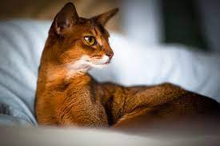

Абісінський

Характер у абісинки життєрадісний, жвавий, ласкавий. Це дуже
рухлива, активна, грайлива кішка, не любить бути замкненою в тісних
приміщеннях. Потребує простору. Добре утримувати або вигулювати її у
вольєрі. Тварина дуже слухняна, легко дресирується. Можна привчити
приносити предмети. Має ніжний і мелодійний голос.
Абісинські кішки — це тварини середнього розміру, стрункі, гнучкі.
Тіло міцне, м'язисте, трохи витягнуте, підібране, пропорційне. Спина
міцна, розвинена. Груди широкі й досить глибокі. Кінцівки міцні,
довгі й стрункі. Тварина стоїть ніби «навшпиньках». Лапи маленькі,
вузькі, овальні. Хвіст відносно довгий, звужується від основи до
загостреного кінця. Кінчик хвоста рухливий. Голова невелика,
клиноподібної форми, з м'якими обрисами. Мордочка ледь позначена.
Ніс прямий, середньої довжини. Підборіддя сильне, опукле. Вуха
великі, вертикально поставлені, широкі в основі, широко розставлені.
Мають заокруглені кінці з китицею волосся. Брови й повіки темні. Очі
великі, виразні, мигдалеподібної форми, трохи косо посаджені. Колір
інтенсивний — від бурштиново-золотавого до зеленого. Шия коротка,
витончена, елегантно вигнута. Головна прикраса абісинської кішки -
це її шерсть. Коротка і блискуча, вона переливається різними
кольорами. А все завдяки тикингу: кожен волосок на тілі абісиньки
має відразу кілька відтінків.
Читай детальніше